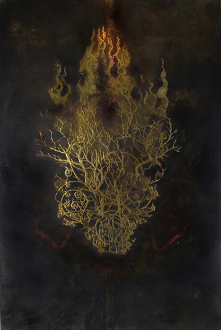
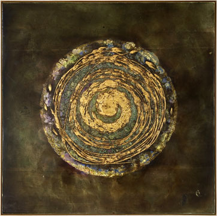
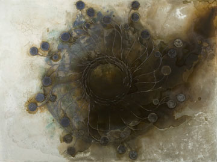
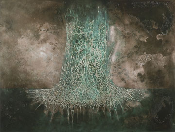
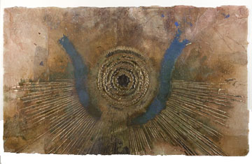
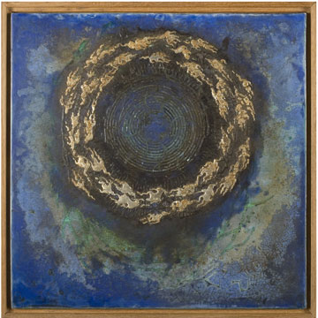
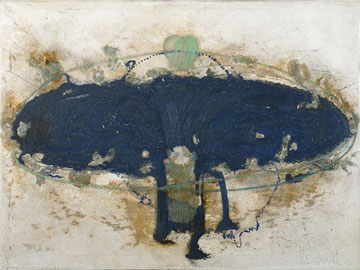

|
> Artists > Clay Witt > Images 3
Clay Witt

Images | Images 2 | Images 3 | Info | Collaboration


Clay Witt. Tree of Life, 2008.
Cut paper, pigment, polymer emulsion, rust and gold leaf on canvas on wood, 72 x 48 inches

Clay Witt, Welter and Waste, 2004 – 2005.
Pigment, polymer emulsion, malachite gesso, gold leaf, and rust on panel, 47 x 47 inches

Clay Witt, Gift Apocalypse: Hannah Cohoon, 2006.
Pigment, polymer medium, lapis lazuli gesso, intaglio prints, and rust on walnut panel., 36 x 48 inches

Clay Witt, Instructions (Some Pig), 2006.
Intaglio prints, pigment, polymer emulsion, malachite, rust, and white gold leaf and silver leaf on walnut panel, 34 x 21 ½ inches

Clay Witt, Sunrise Engine, 2005
Ppolymer emulsion, rust, lapis lazuli, malachite, gesso, and gold leaf on paper, 23 x 38 inches

Clay Witt, Welter and Waste II, 2006.
Lapis lazuli, polymer emulsion, malachite gesso, gold leaf, and rust on panel, 12 x 12 inches

Dean Dass and Clay Witt, Before the Flood, 2006.
Intaglio, mica, marble dust, polymer emulsion, lapis lazuli, gesso, and rust on walnut panel, 24 x 17 ½ inches
See more collaborative work >
Images | Images 2 | Images 3 | Info | Collaboration
|